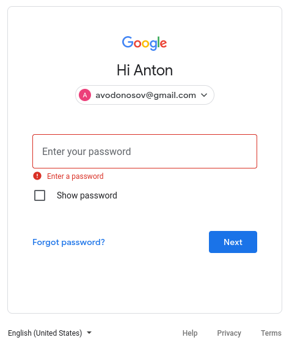
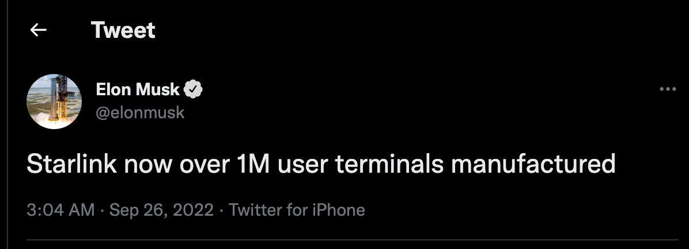
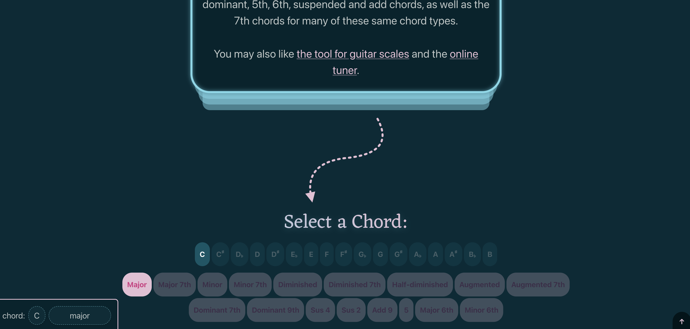
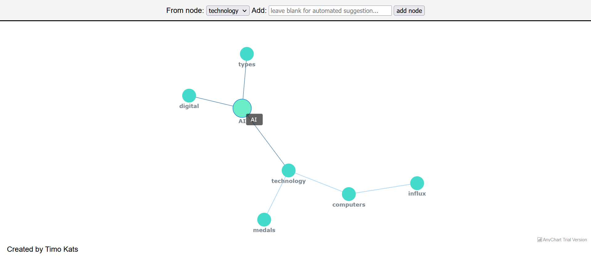

例行公事比灵感乍现更重要？
诗人玛丽-奥利弗曾经写道：“世界上最遗憾的人是那些感受到创造性工作召唤的人，他们感受到自己的创造性力量的躁动和起义，却既不给它力量也不给它时间”。但是，为什么给我们想做的事情以力量和时间是如此困难呢？
答案是，处理有最后期限的事情，比做无限制和无结构的事情要容易。与我们不确定的事情相比，处理我们感到有信心的事情也可能更令人生畏。
解决这个问题的方法是将任务进行划分，并以最小的步骤来处理事情。这个理论被称为 “水坑理论”。首先列出你的任务清单，然后把它们分成尽可能小的任务。然后，把它们分配到小块的时间里，通常是45分钟。重要的是要告诉自己，一次只关注一个水坑，并对接下来发生的事情持开放的心态。在两个水坑之间休息也很重要，可以提神和保持持续的动力。
我开了这个博客，这是我的新起点，我是如何做到这一点的，就是遵循这两条规则。第一条规则是，这不是一个 “必须做 “的事情，而是一个 “可能做 “的事情。没有短期的承诺。这可能是我的最后一篇文章。第二条规则是，没有最终目标或目的。没有长期承诺。没有目标，没有期望，没有计划。这就消除了所有失败的原因。重要的是要保护自己免受失败的恐惧和内疚，因为做创意就像在黑暗的森林中开车，没有路，没有方向。
总之，要开始你的创意之旅，重要的是不仅要以轻松的步伐前进–一次一个水坑，而且要适应 “没有目的地 “的概念，消除对未知的恐惧。
简单报
Google 取消了登录记住密码的选项

Google 账号取消了登录的记住密码选项，换而言之，一旦登录，这个网络浏览器即使在重启后也能访问你的账户。
星链用户量超 100万

埃隆马斯克发文宣布说星链已经拥有超 100 万的用户终端

国外一玩家提出游戏里的 NPC 应该由真人扮演，既让游戏中的 NPC 显得没有那么呆板，又可以促进就业，之后可能会出现有趣的现象，有钱的人享受游戏，想要赚钱的人，可以尝试在里面打工，当做一个活泛的 NPC，最棒的点在于，NPC 的人物形象可以很丰富，你是什么年龄或者职业的人都可以参与。
新玩意
快速学习吉他和弦的工具

作者已经贴心的将和弦和手指的位置标记好了，并且还有一个额外的在线调音器，对于初学者来说非常友好，想入门学吉他的小伙伴，可以现在这个网站上做一下备课。
inspyr 头脑风暴辅助联想工具

试想一下，头脑风暴的时候有没有卡壳的时候，这个时候如果有 AI 的辅助工具，基于海量的数据，帮你做辅助词联想是不是还不错，inspyr 就是这样一个在线助手，可以帮助你更好的进行头脑风暴
matrix 在线版

想去咖啡店装13，但是安装 matrix 库又没有必要，所以要不直接上个在线版的吧，人离开座位的时候，打开浏览器页面地址就好